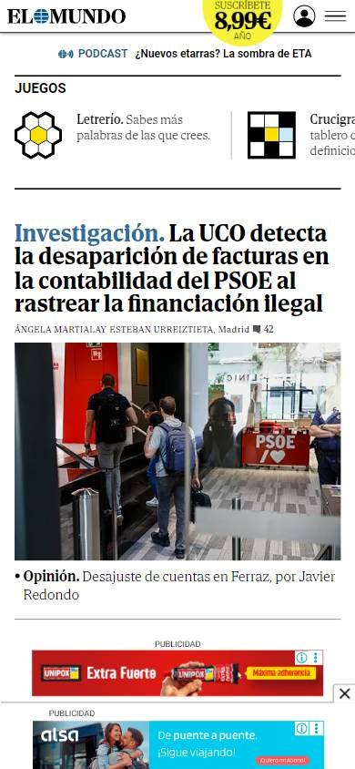
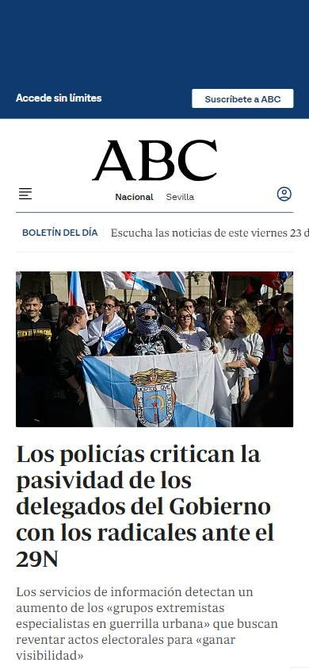
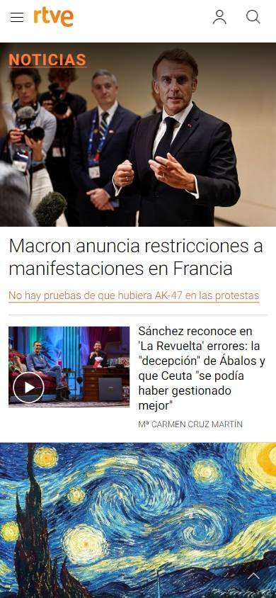

Sitio informativo o de noticias
Los seleccionados
Los tres sitios más visitados de España, según estadísticas de tráfico.
En resumen: lo que hacen los líderes
La pantalla de inicio de cada uno



Estilo visual
Colores, imágenes, tipografía y cuánta información muestran.
Tu estilo visual debería…
- Blanco y negro con titulares con serifa si querés transmitir tradición.
Lo que tienen en común: Los diarios tradicionales usan blanco y negro con serifa; la televisión pública, fondos oscuros y sin serifa.
La paleta de cada uno
Medida sobre la primera pantalla. Los colores de marca salen del header; el resto muestra cuánto espacio ocupa cada color.
Así lo resuelve cada uno
Ficha comparativa
| Aspecto | El Mundo | ABC | RTVE |
|---|---|---|---|
| Paleta | Acotada: blanco y negro + azul de antetítulos | Acotada: blanco y negro | Acotada: negro + naranja |
| Imágenes | Fotos periodísticas medianas | Fotos medianas | Fotos grandes |
| Tipografía | Serifa en titulares | Serifa en titulares | Sin serifa |
| Densidad | Alta | Alta | Media |
Header
La franja de arriba con el logo y los accesos.
Tu header debería…
- Logo centrado con tipografía clásica y la fecha del día.
- Botón de suscripción destacado a la derecha, con el precio si es una oferta.
Lo que tienen en común: Los diarios centran un logo clásico con serifa, muestran la fecha y ponen la suscripción como botón destacado a la derecha.
Así lo resuelve cada uno


Ficha comparativa
| Aspecto | El Mundo | ABC | RTVE |
|---|---|---|---|
| Fondo | Blanco | Blanco | Negro |
| Logo | Centrado, con serifa | Centrado, con serifa | A la izquierda |
| A la derecha | Precio de suscripción en amarillo y «Iniciar sesión» | «Suscríbete» y «Iniciar sesión» | Cuenta y menú |
| Fecha visible | Sí | Sí | No (directo de TV y radio) |
Menú y categorías
Cómo se organizan las secciones.
Tu menú y categorías debería…
- Fila de secciones debajo del logo y un acceso «En directo».
Lo que tienen en común: Fila de secciones debajo del logo, con un acceso al directo cuando hay.
Así lo resuelve cada uno

Ficha comparativa
| Aspecto | El Mundo | ABC | RTVE |
|---|---|---|---|
| Formato | Fila de secciones debajo del logo | Fila de secciones en mayúsculas debajo del logo | Fila de secciones y programas sobre negro |
| Directo | — | «En directo» | «Directo» con reproductor |
Primera pantalla
Lo primero que se ve debajo del header.
Tu primera pantalla debería…
- Titulares con serifa y un antetítulo corto en color («Investigación.», «Opinión.»).
Lo que tienen en común: Portadas a varias columnas, titulares con serifa y antetítulos en color para orientar la lectura.
Así lo resuelve cada uno
Ficha comparativa
| Aspecto | El Mundo | ABC | RTVE |
|---|---|---|---|
| Formato | Titulares en columnas con antetítulo en color + foto grande al centro | Foto grande + editorial al lado | Título «Noticias» + foto grande con titular |
| Estilo de titular | Serif, con antetítulo azul («Investigación.») | Serif | Sans serif, en negrita |